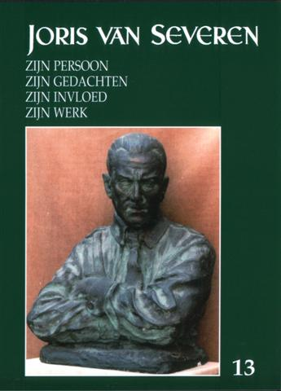

> nieuwsbrief > 2009 - nr 2
Inhoud
In ruil voor een ongewijzigde basisbijdrage van 25 verzekert u zich ook in 2009 van een abonnement op onze Nieuwsbrief Joris van Severen en van het reeds 13e Jaarboek Joris van Severen waarvan u verder in dit nummer de inhoudsopgave vindt. Postrekening 000-1705814-69, (voor betalingen vanuit het buitenland: IBAN BE71 0001 7058 1469 / BIC BPOTBEB1) t.n.v. Studiecentrum Joris van Severen, 8900 Ieper.
Davidsfonds en
Abbeville
Het
Davidsfonds is niet slechts een boekenclub, maar ook een
reisagentschap.
Uit de jongste folder (Cultuurreizen
2009) lazen we het programma van een 4-daagse reis naar Normandië.
Op dag 4
wordt de terugreis aangevat:
terug naar België via Arras en Doornik.
Stop te
Abbeville. Bezoek aan de begraafplaats van Joris van Severen, Jan
Ryckoort en Rachel Baes. De reisbegeleiding is in handen
van prof.
Dr. Luc de Vos, hoogleraar aan de Koninklijke Militaire School en aan
de
KULeuven.
Renaissance
Européenne
Het
eerste
nummer van de jaargang 2009 van Renaissance
Européenne opent met de houtsnede die Ivo de Cock van Joris van
Severen
maakte (en die vorig jaar de kaft van onze Nieuwsbrief
sierde) en met een lang citaat van Van Severen over het
kapitalisme.
Verderop in het blad wordt ook uitgebreid geciteerd uit de Franstalige
versie
van het Manifest voor de Lage Landen.
Op de
volgende paginas vindt u alle info met betrekking tot de voor het jaar
2009
aangekondigde herdenkingsplechtigheden. Wij hopen er tal van onze
lezers te
zullen mogen begroeten.
ZONDAG
9 MEI JAARMIS TE MALE (BRUGGE) &
ZONDAG
10 MEI 2009 GROET
AAN HET GRAF TE
ABBEVILLE
Een
initiatief van de Stichting
Joris van Severen
Zaterdag
9 mei: 16.00 uur: Plechtige Gregoriaans
gezongen H. Mis, met homilie opgedragen door de E.H.
Zondag
10 mei:
afspraak om 11.30
uur aan de
toegang tot
het
kerkhof te Abbeville;
aansluitend
gezamenlijk bezoek aan het graf van Joris van Severen en Jan Rijckoort.
Voor het bezoek aan het
graf van
Joris van Severen en Jan Rijckoort te Abbeville op zondag
10 mei maken we gebruik van de carpooling-formule op
kostendelende basis. Dit initiatief wordt gecoördineerd door
Info H. Mis en
programma te Brugge
op zaterdag en coördinatie carpooling op zondag:
Wegwijzer
naar het Slot van Male
Vanaf E 40: afrit
Aalter, richting Knokke-Heist tot kruispunt Maldegem
(rond punt), van daar richting Brugge via Sijsele. Male ligt aan de N 9
+/-
Herdenking
aan het Bourgoensche
Cruyce
Aan de toegangspoort tot het voormalige woonhuis van Joris van Severen in de Wollestraat te Brugge memoreert een gedenkplaat de namen van de vier Brugse slachtoffers van het Bloedbad van Abbeville. Sinds enkele jaren wordt aldaar - door het Abbeville Comité - jaarlijks een korte herdenkingsplechtigheid gehouden rond de datum van 20 mei. Dit jaar zal die plechtigheid niet doorgaan op dezelfde datum als deze van het herdenkingsmis te Male, maar wel op zaterdag 16 mei om 11.00 uur. Na enkele korte toespraken o.m. door Mevr. Gaby Warris in 1940 als 18-jarige in de kiosk te Abbeville - wordt de plechtigheid besloten met een bloemenhulde aan de gedenkplaat.
Jaarboek Joris van Severen 13 (2009)
 In deze jaarboekaflevering komt vooreerst Joris van Severen zelf aan het woord. Zijn oorlogsdagboek Die vervloekte oorlog1 eindigde op 11 november 1918, de dag van de Wapenstilstand. We brengen hierop het integrale vervolg voor wat het jaar 1918 betreft. Uit die resterende dagboekbladzijden van 1918 blijkt hoezeer Joris van Severen op de hoogte was van de toenmalige actualiteit. Hij staat stil bij gebeurtenissen waarover nu niemand nog spreekt als de Jodenvervolging binnen het toen pas opnieuw ontstane Polen of de marxistische revolutie in Duitsland en bij toestanden die na een decennialang stilzwijgen weer in de media komen zoals de Armeense genocide door de Turken. Een en ander illustreert voortreffelijk de selectiviteit van het collectieve geheugen! In eigen land raakt hij, alhoewel nog onder de wapens, betrokken bij de oprichting van de Frontpartij, neemt hij het voor de activisten op en is hij te Verviers getuige van de terugtrekking van de Duitse legers.
In 1933 vond te Delft
een grootse Oranjehuldiging plaats
waarvoor Cyriel
Verschaeve de plechtige eedformule Wij
heffen hart en handen voor t heil der Nederlanden
dichtte, die
sindsdien
op de gevel van de kerk te Delft gebeiteld staat.
De naam van Willem
Pompe is een naam met klank in intellectueel Nederland. Dat deze
geleerde
Groot-Nederlands dacht èn niet bepaald afkerig stond van de toenmalige
nieuwe
orde-bestrevingen en vanuit deze beide belangstellingssferen contact
zocht
met Joris van Severen is geen geheim, alhoewel het natrekken zeker
waard,
toont
Hoe kwam Louis Gueuning, als fervent Wallingant tot het Verdinaso? Jef Werkers trok het na door Gueunings parcours nauwgezet na te gaan. Hij verklaart meteen waarom Gueuning naderhand tot de getrouwsten onder de getrouwen kan gerekend worden.
Minder bekend is het
parcours dat kunstschilder Albert Servaes
aflegde na
mei 1940.
Eind vorig jaar overleed vrij onverwacht Rudy Pauwels, medestichter van ons Studiecentrum. Van zijn hand hadden we nog een kortere tekst in portefeuille. Als geen ander zag hij het als zijn taak om waar nodig de nagedachtenis van zijn oom Joris van Severen te verdedigen.3 Ook deze tekst kadert in dit opzet. We brengen hem als eresaluut ter zijner nagedachtenis.
____________
1 Die
vervloekte oorlog, uitgegeven door ons Studiecentrum in
samenwerking met Uitgeverij
Pelckmans te Kapellen en ingeleid door
2 Een
eerste
bijdrage van zijn hand over
Karel de Schaepdrijver verscheen in Jaarboek 8, onder de titel Karel de Schaepdrijver, de sublieme
desserteur.
3 Zie onder meer zijn essaybundel Joris van Severen een apologie en de jaarlijkse groene brochures van zijn hand.
______________________
N.a.v. Joris van Severen zijn persoon, zijn gedachten, zijn invloed, zijn werk Jaarboek 13 (2009), 208 pp., ill., Ledenprijs: 25 . Boekhandelprijs 30 .
Joris van Severen en Charles Baudelaire
Charles
Baudelaire (1821-1867) was het Dandyisme toegedaan en huldigde de
godsdienst
van de heldhaftige elegantie en het beginsel van lart pour lart
(Lectuurrepertorium).
Merkwaardig
is de lijn die De Smaele trekt van Joris van Severen naar Gerard
Bruning
(1898-1926), de jong gestorven oudere broer van Henri Bruning
(1900-1983), die
later één van de intellectuele krachten van het Verdinaso in Nederland
zou
worden.
Reden
waarom we in onderstaand excerpt (vertaald in de hedendaagse spelling)
ook de
alineas overnemen over de Brunnings. Ter oriëntatie in de tijd, hebben
we er
de levensdata van de vernoemde auteurs tussen [-] aan toegevoegd. In de
zinsneden tussen aanhalingstekens is Joris van Severen aan het woord.
In 1921 werd door bewuste jonge katholieke Vlamingen een eerste poging gedaan om Baudelaire voor zich op te eisen.1 Deze gebeurtenis is op zich zelf merkwaardig genoeg om er een ogenblik bij stil te staan. Bedoelde sympathieën voor de figuur Baudelaire kwamen het klaarst tot uiting in een programmatisch artikel Charles Baudelaire door Georges van Severen, verschenen in het tijdschrift Ter Waarheid. 2 Daaruit neem ik een paar van de meest typische zinsneden over. (Het schijnt me toe dat we hier voor een sprekend voorbeeld staan van hetgeen Gossaert [1884-1958] bezielde retoriek noemt.)
Voor zeer velen, voor de meesten helaas, die t geluk hebben deze naam te kennen, roept hij geen andere gedachten op dan van ziekelijke zedeloosheid, perversiteit, cynisme, duivelachtigheid, enz. Voor ons een der allergrootste, allerechtste, allerdiepste, allermenselijkste dichters van alle tijden. Een katho1iek dichter, essentieel. Inderdaad. In deze ziel klaagt en vloekt het Irrequietum met een zo wrange hevige smart, dat het leven van deze rampzalige mens er door gebroken werd en vernield.
Wat volgens Van Severen Baudelaire tot een specifiek katholiek dichter stempelt, is de heftigheid en de bestendigheid, met dewelke in hem de strijd tussen Goed en Kwaad gewoed heeft.
Zo geweldig, zo machtig, met de macht van zon triomfantelijke christene menselijkheid, roept en hunkert deze ziel naar almachtige schoonheid, dat dit hunkeren haar potentieel bevrijdt van al het demonische van het lichaam en haar zuiver weet te behouden midden de meest schrijnende geestelijke nederlagen, in den strijd tegen de subtiele magie van het vlees. Baudelaire, een der smartelijkste bewusten van het aardse ballingschap, een der hartstochtlelijkste, diepgefolterde zoekers naar het verloren Paradijs, een waarlijk Koninklijke ziel. Geen macht, maar hoogste adel...
Men ziet het, uit deze bladzijde klinkt hartstocht genoeg; deze jonge 20e-eeuwer voelt zich met Baudelaire geestelijk verwant, en hij is de woordvoerder van een goed deel der katholieke avant-garde in Vlaanderen. Zoals in soortgelijke gevallen meer gebeurt, wil Van Severen zijn bewondering ook op theoretische basis grondvesten En de waarde van Baudelaires verzen aan de esthetische beschouwingen van zijn geloofsgenoot de thomist Jacques Maritain [1882-1973]. En triomfantelijk wordt medegedeeld dat, krachtens de bepaling, gegeven door de schrijver van Art et Scolastique de gedichten van Baudelaire echte, hoge kunst mogen heten. Des te beter. Het artikel wil bovendien zijn een inleiding tot Baudelaire, een aansporing tot kennismaking voor die lezers, welke met Baudelaire niet of onvoldoende zouden vertrouwd zijn.
Immers, men vindt er achtereenvolgens:
1. brokstukken uit Gautier over Baudelaire;
2. een korte levenskarakteristiek van Baudelaire;
3. marginalia uit zijn werk;
4. LEsthetique de Baudelaire, een onvertaald stuk van G. de Reynold [1880-1970] - (deze keuze spreekt boekdelen) - overgenomen uit lEsprit Nouveau (1920; nr. 15).
Dat Baudelaire - en als lyrisch dichter en als estheticus - een rol speelt in het geestelijk leven van de jongeren van Ter Waarheid, het kan, na dit stuk, niet meer betwijfeld worden. Deze overtuiging wordt versterkt door de herhaalde aanhalingen uit zijn werk, welke in de twee jaargangen van het tijdschrift te vinden zijn.3
Een zelfde belangstelling voor Baudelaire kan men tijdens de jongste jaren waarnemen in vooruitstrevende middens van jonge Hollandse katholieken. Hun organen waren - en zijn nog steeds - de tijdschriften Roeping (1922; de Nijmegse groep) en De Gemeenschap (1925).
En hier beschikken we over een merkwaardig document. Het is een onvoltooid gebleven studie over Baudelaire, van de hand van de jonggestorven essayist (er bestaat van hem ook scheppend proza) Gerard Bruning.4
Dat in zijn kritisch werk niet de minste aanspraak gemaakt wordt op objectiviteit, Bruning heeft het zelf getuigd (zijn strijdleuze luidde catholique avant tout, ook in de kunst), en dit is niet de enige reden waarom men hem het best met Karel van den Oever [1879-1926] (in zijn tweede stadium) vergelijken kan; hij rekent zich zijn fanatiek subjectivisme tot deugd en tot plicht. Ziehier trouwens hoe zijn vriend Marsman [1899-1940] de inleiding tot het Nagelaten Werk besluit: Gij kunt dit werk, deze beginselen en deze mens natuurlijk verwerpen, of aannemen, gij kunt hem zelfs, als gij hem eren wilt, alleen maar óf verwerpen óf aanvaarden - Wanneer nu een jong criticus als deze, fanatiek als E. Hello [1828-1885], star dogmatisch als H. Massis [1886-1970], heftig pamflettisch als L. Bloy [1846-1917] (van deze is hij, in Holland. de volgeling), woorden van bewondering voor de kunstenaar, maar vooral woorden van devotie en medelijden voor de mens Baudelaire spreekt bij wie hem, aan de oppervlakte verwijlend, zoveel moest afstoten dan moet men aannemen dat deze bewondering en deze devotie zeer oprecht en diep zijn.
Ik aarzel bovendien niet te zeggen dat G. Bruning in de jongste Nederlandse letterkunde een bij uitstek Baudelairiaanse verschijning geweest is, De antinomie tussen Goed en Kwaad is hem tot een geestesfolterende dwangvoorstelling geworden.
Men doorbladere zijn werk: aanhoudend wordt. in de meeste opstellen, Baudelaire aangehaald of komt hij althans ter sprake, bijna uitsluitend in hetzelfde verband.
Noten
2 Ter Waarheid, jg. II, p. 53 vlg.
3 Men zie vooral Ter Waarheid, 1921, p. 487,
4 De Prijs der Schoonheid, fragment uit de inleiding op een studie over Baudelaire - in Nagelaten Werk van G. Bruning; samengesteld en ingeleid door H. Bruning en H. Marsman, Nijmegen, 1927, Men kan de studie insgelijks vinden in de letterkundige almanak Erts voor het jaar 1927, p. 4 vlg.
Van
Actualisme tot Nationaal-Solidarisme -
Nicolaas Willem Cornelis Brouwer
Op 11 februari 1933 werd in Hier Dinaso! enthousiast de oprichting van een Nederlandse afdeling van het Verdinaso aangekondigd. De eerste contacten met Nederland dateerden echter van 1931. Kort na de oprichting van het Verdinaso correspondeerden Joris van Severen en vooral Wies Moens met Hugo Sinclair de Rochemont. Op zijn initiatief was er in januari 1932 een bijeenkomst in Bergen op Zoom om een samenwerking op te zetten tussen het Verdinaso en het quasi gelijktijdig opgerichte Verbond van Nationaal-Solidaristen in Rijks-Nederland (VNS). Hoewel het zover niet kwam, bleef het VNS actief tot 1934.
Naast Sinclair de
Rochemont was
Nicolaas Willem Cornelis Brouwer een drijvende kracht binnen de partij.
Brouwer, bedrijfsleider van een aardewerkbedrijf in Leidschendam, en
Sinclair
de Rochemont waren al compagnons de route
sinds de oprichting in 1924 van het Verbond van Actualisten (VvA),
de
eerste fascistische partij in Nederland. Brouwer stond bekend als een
van de
ideologen van het VvA en was tussen 1926 en 1928 hoofdredacteur van het
partijtijdschrift De Vaderlander. Samen
met Sinclair stond hij in voor de liquidatie van het VvA en de overgang
naar de
Vereniging De Bezem in
Ondanks de vrij beperkte omvang illustreert het archief Brouwer (BB ADVN AC779) de hierboven beschreven politieke loopbaan van de vormer, met onder meer stukken over de organisatie, de ideol